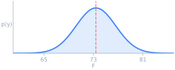
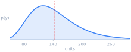
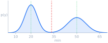
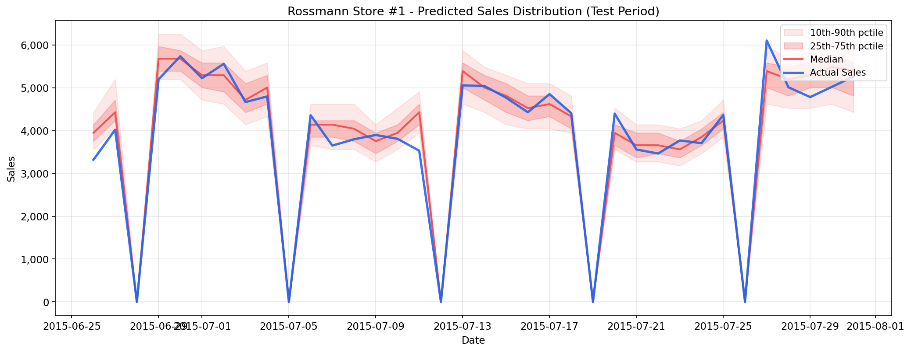
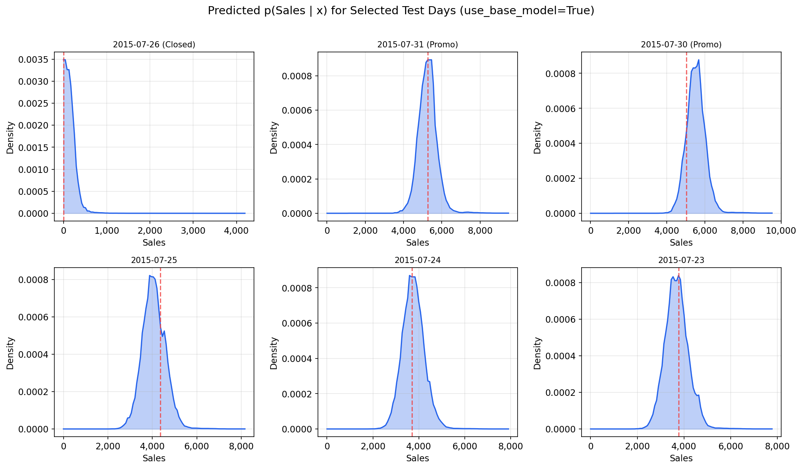
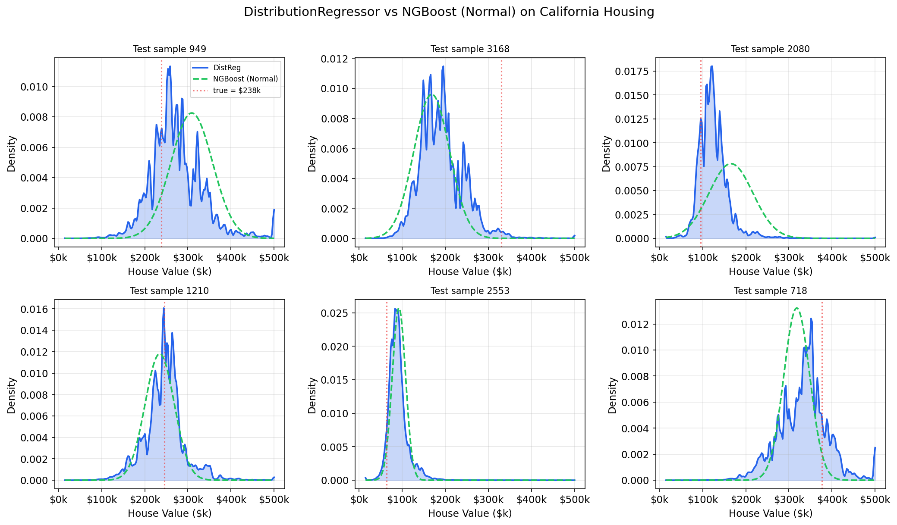
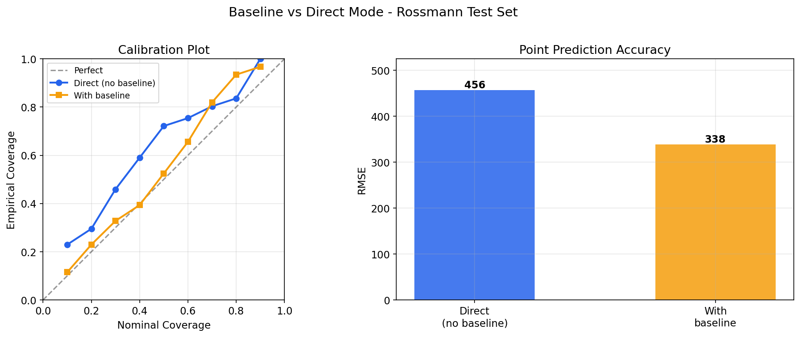
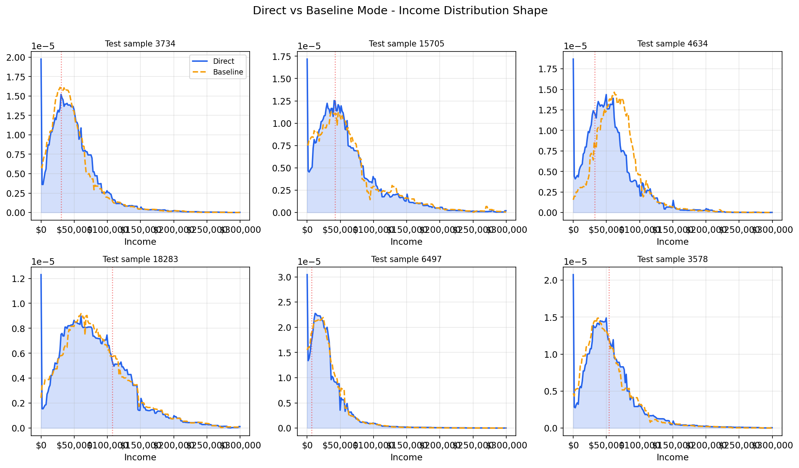
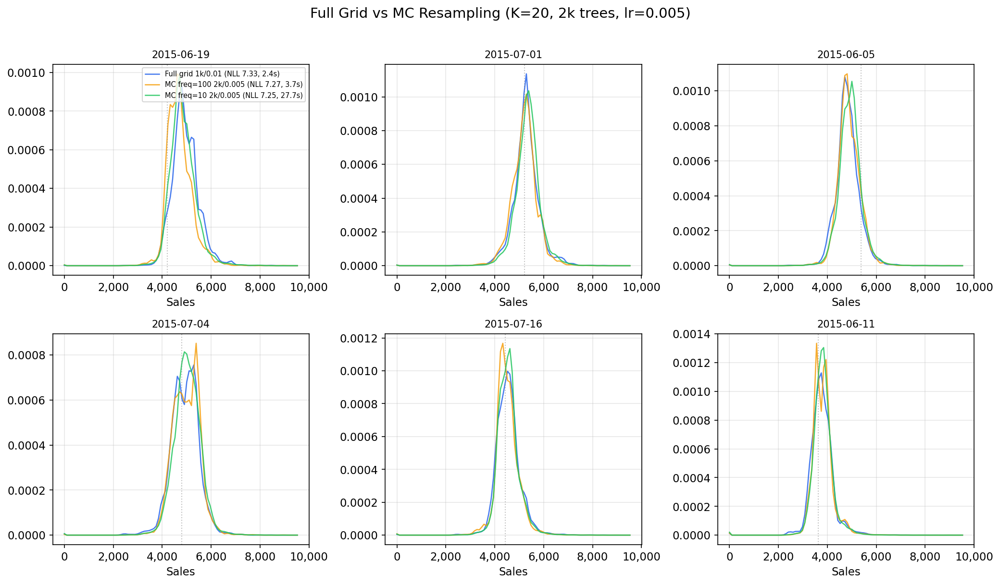

Nonparametric conditional density estimation using LightGBM with a CDF-based approach.
When model predictions drive automated decisions, a single number is not enough. Probabilistic prediction outputs the full distribution, revealing uncertainty, skew, and multimodality.
| Point Prediction | Probabilistic Prediction | ||
|---|---|---|---|
| Tomorrow's temperature | 73.4 F |  |
Symmetric, low variance. The point estimate works well here. |
| Retail demand | 142 units |  |
Right-skewed with a long tail. The mean underestimates the risk of high demand. |
| Commute time | 33.5 min |  |
Bimodal: 20 min or 50 min. The mean of 33.5 almost never happens. |
The target range is discretized into a grid of threshold points. For each training sample and threshold, a binary target indicates whether the true value falls below that threshold. A single LightGBM model learns the conditional CDF F(τ|x) = P(Y ≤ τ | X = x), with a monotone increasing constraint on the threshold feature to ensure a valid CDF. The PMF is recovered by differencing.
n_bins pointsAt inference, the model predicts F(τ|x) for all grid points, then differences the CDF to recover the probability mass function. This produces a full nonparametric distribution for every input - no distributional assumptions required.
Requires Python ≥ 3.8
# Clone and install in development mode
git clone https://github.com/guyko81/DistributionRegressor.git
cd DistributionRegressor
pip install -e .
All dependencies are installed automatically via pip.
from distribution_regressor import DistributionRegressor print("Ready!")
Install and start predicting distributions in under 10 lines of code.
The defaults work well for most problems - just set n_bins and n_estimators.
from distribution_regressor import DistributionRegressor # Initialize with defaults - this is all you need model = DistributionRegressor( n_bins=50, # grid resolution n_estimators=500, # LightGBM trees ) # Train model.fit(X_train, y_train) # Point predictions y_mean = model.predict(X_test) # expected value y_mode = model.predict_mode(X_test) # most likely value # Uncertainty intervals = model.predict_interval(X_test, confidence=0.9) std = model.predict_std(X_test) # Full distribution grids, dists, offsets = model.predict_distribution(X_test) # Evaluate density at specific points density = model.pdf(X_test, y_test) nll = model.nll(X_test, y_test)
import matplotlib.pyplot as plt # Predict distribution for a single sample grids, dists, offsets = model.predict_distribution(X_test[0:1]) plt.plot(grids[0], dists[0], label='Predicted PDF') plt.axvline(y_test[0], color='r', linestyle='--', label='True Value') plt.legend() plt.show()
The raw predicted PMF can appear stepped or jagged at lower n_bins values.
Apply Gaussian smoothing to the CDF before deriving outputs for smoother densities.
This can be set at construction or changed after training:
# Set at construction model = DistributionRegressor(n_bins=100, output_smoothing=1) # Or change after training without refitting model.set_output_smoothing(output_smoothing=1.5) # Preserve discrete mass points (e.g., exact zeros) model.set_output_smoothing(output_smoothing=1, atom_values=0)
| Parameter | Default | Description |
|---|---|---|
n_bins | 50 | Number of grid points for the CDF. Controls the resolution of the predicted distribution.
Higher values capture finer detail but increase memory proportionally (n_samples × n_bins expanded rows).
50 is fine for most problems; use 100–200 for complex or wide-range targets. |
n_estimators | 100 | Number of LightGBM boosting iterations. Since the model learns a CDF (a smooth function), it often benefits from more trees than a standard regression model. 500–1000 with a lower learning rate (0.01–0.05) typically gives the best results. |
learning_rate | 0.1 | Boosting learning rate. Lower values (0.01–0.05) with more estimators generally produce better-calibrated distributions. |
output_smoothing | 0 | Gaussian smoothing sigma (in grid-index units) applied to the predicted CDF before deriving outputs.
Produces smoother densities. A value of 1–2 works well. Can be changed after training
via set_output_smoothing() without refitting. |
atom_values | None |
Discrete mass points whose CDF jumps should be preserved through smoothing.
Useful when the target has exact values that appear frequently (e.g., zero for "store closed").
Only relevant when output_smoothing > 0. |
**kwargs | - | Any LightGBM parameter: max_depth, num_leaves, subsample,
colsample_bytree, min_child_samples, etc. These are passed directly
to the underlying LGBMRegressor. |
DistributionRegressor(n_bins=100, n_estimators=1000, learning_rate=0.01)
works well across a wide range of problems. Increase n_bins for targets with very wide ranges
or fine structure. Adjust LightGBM parameters (num_leaves, subsample) as you would
for any gradient boosting model.
These options are available for specific use cases but are not needed for most problems. See the Advanced Options page for details.
| Parameter | Default | Description |
|---|---|---|
use_base_model | False |
If True, first trains a base LightGBM regressor, then models the residual distribution. Can improve RMSE but may obscure multimodal structure. Not needed for most use cases. |
monte_carlo_training | False |
If True, samples a small number of grid points per training sample instead of using the full grid.
Reduces memory from n × n_bins to n × mc_samples.
Use with mc_resample_freq for better quality. |
mc_samples | 5 | Number of grid points per sample when monte_carlo_training=True. 20 is a good default. |
mc_resample_freq | 100 | Resample MC grid points every this many trees. Lower values give better grid coverage (like SGD over threshold space). 100 is a good default; 10 gives the best quality. |
Scikit-learn compatible interface with rich distributional methods.
DistributionRegressor(
n_bins=50, # grid resolution (higher = finer distributions)
n_estimators=100, # LightGBM trees
learning_rate=0.1, # boosting learning rate
output_smoothing=0, # Gaussian smoothing on CDF (0 = off)
atom_values=None, # preserve discrete mass points through smoothing
random_state=None, # random seed
use_base_model=False, # advanced: learn residual distribution
monte_carlo_training=False,# advanced: memory-efficient MC sampling
mc_samples=5, # advanced: MC points per sample
mc_resample_freq=100, # advanced: resample grid points every N trees
**kwargs # passed to LGBMRegressor
)
X can be a NumPy array or Pandas DataFrame. sample_weight applies per-sample
weights to the expanded training set.q=[0.1, 0.5, 0.9]). Returns shape (n_samples,) or (n_samples, n_quantiles).(n_samples, 2).
A confidence=0.9 gives the 5th–95th percentile interval.(grids, distributions, base_offsets):
grids: (n_samples, n_bins) - per-sample grid points in absolute y-spacedistributions: (n_samples, n_bins) - probability mass (sums to 1 per row)base_offsets: (n_samples,) - base model predictions (zeros when use_base_model=False)eps for y values outside the grid support.np.log(model.pdf(X, y, eps)).predict_quantile.output_smoothing is the Gaussian sigma in grid-index units.
atom_values specifies discrete mass points whose CDF jumps are preserved through smoothing.@software{distributionregressor2025,
title = {DistributionRegressor: Nonparametric Distributional Regression},
author = {Gabor Gulyas},
year = {2025},
url = {https://github.com/guyko81/DistributionRegressor}
}
Predicting daily sales for a retail store. The model captures day-of-week patterns, promotional effects, and holiday uncertainty - including the hard zero on Sundays.
from distribution_regressor import DistributionRegressor model = DistributionRegressor( n_bins=100, n_estimators=1000, learning_rate=0.01, random_state=42, ) model.fit(train_data[features], train_data['Sales']) # Prediction intervals for time series visualization p10 = model.predict_quantile(X, 0.1) p50 = model.predict_quantile(X, 0.5) p90 = model.predict_quantile(X, 0.9)

Each sample gets a full predicted density. The closed-day prediction collapses to a tight spike at zero, while open days show the characteristic sales distribution with appropriate spread depending on context (promo vs. normal weekday):

Predicting the full house value distribution conditional on location and census features (8 features, 20,640 samples). Compared against NGBoost on test-set negative log-likelihood.
| Method | Test NLL |
|---|---|
| DistributionRegressor | 0.14 |
| NGBoost (Normal) | 0.56 |
NGBoost with a Normal distribution forces every prediction into a symmetric, unimodal bell curve. When the true conditional distribution is multimodal, skewed, or bounded, the parametric assumption breaks down and wastes probability mass on impossible values.
NGBoost can use more complex parametric families to mitigate this, but the user must choose the right family in advance. DistributionRegressor sidesteps this entirely - it learns whatever shape the data requires.

use_base_model)use_base_model=False) learns the full conditional distribution
end-to-end and works well for the vast majority of problems.
The base model option exists for specific scenarios described below.
When use_base_model=True, the model first trains a standard LightGBM regressor for
point predictions, computes out-of-fold residuals, and then learns the residual CDF
rather than the raw target CDF. This means the distributional model only needs to capture
the uncertainty around the point prediction rather than the full target range.
use_base_model=False (default)The CDF model learns p(y|x) directly. This is the recommended approach.
use_base_model=TrueFirst fits a standard LightGBM for point predictions, then models the residual distribution.
The base model approach learns a residual distribution centered near zero, which means the CDF model focuses its capacity on the uncertainty around the point prediction rather than the full target range. This can improve RMSE slightly, but adds complexity (5-fold CV + two models) and may introduce subtle shifts or smoothing in the predicted distribution shape.
In practice, the direct model (use_base_model=False) produces distributions that are
precise enough for both point prediction and uncertainty quantification. The base model option
adds complexity for a marginal RMSE gain that is rarely worth the trade-off.

On California Housing data - where conditional distributions can be multimodal - both modes capture the overall shape, but the baseline model can shift or smooth out fine structure due to the residual centering:

# Only use base model when you specifically need it model = DistributionRegressor( use_base_model=True, n_bins=100, n_estimators=1000, learning_rate=0.01, )
monte_carlo_training)
By default, the training set is expanded to n_samples × n_bins rows: every sample is
paired with every grid point. Monte Carlo training instead samples mc_samples uniform
grid points per sample, reducing peak memory significantly. With periodic resampling
(mc_resample_freq), different groups of trees train on different random grid points,
improving coverage of the threshold space.
For each training sample, mc_samples threshold points are drawn uniformly from the
grid range. The mc_resample_freq parameter controls how often fresh points are drawn:
init_model calls.
Resampling works via LightGBM's incremental training (init_model): each group
of trees continues from the previous model but trains on a freshly sampled expanded dataset.
The idea is analogous to mini-batch SGD — each batch of trees sees a different
random slice of the threshold space.
monte_carlo_training=False (default)Each sample is crossed with all grid points.
100k samples × 100 bins = 10M rows
1M samples × 200 bins = 200M rows (may exceed RAM)
monte_carlo_training=TrueEach sample gets mc_samples points per resampling round.
100k samples × 20 MC points = 2M rows
1M samples × 20 MC points = 20M rows (manageable)
MC training is useful when full grid expansion would exceed available memory —
typically with large training sets (100k+ samples) and high n_bins (100+).
For small to medium datasets, the full grid is simpler and fast enough.
Resampling (mc_resample_freq) significantly improves MC quality compared to
single-shot MC. In our benchmarks on the Rossmann dataset, MC with mc_resample_freq=10
produced distributions visually close to the full grid, with comparable NLL.
Results may vary by dataset — we recommend comparing on your own data.
# Full grid (default) - simple, good for small/medium datasets model = DistributionRegressor(n_bins=100) # MC with resampling - for large datasets where memory is tight model = DistributionRegressor( monte_carlo_training=True, mc_samples=20, mc_resample_freq=100, # resample grid points every 100 trees n_bins=100, ) # MC with frequent resampling - better grid coverage, more overhead model = DistributionRegressor( monte_carlo_training=True, mc_samples=20, mc_resample_freq=10, # resample every 10 trees n_bins=100, )
The chart below compares the full grid against MC with two resampling frequencies
on the Rossmann dataset. With mc_resample_freq=10, MC closely tracks the
full grid distributions:

Practical guidance for getting the best results from DistributionRegressor.
For most problems, the following configuration works well out of the box:
model = DistributionRegressor(
n_bins=100,
n_estimators=1000,
learning_rate=0.01,
random_state=42,
)
n_bins for your target range
n_bins controls the resolution of the predicted distribution. Think of it as the
number of "buckets" the model uses to represent the density.
| Scenario | Recommended n_bins |
|---|---|
| Narrow, well-behaved targets (temperature, standardized scores) | 50 |
| Moderate range (retail sales, housing prices) | 100 |
| Wide range or fine structure (house prices, medical costs) | 150–200 |
| Very wide or heavy-tailed (insurance claims, financial) | 200+ (consider log-transforming the target first) |
Higher n_bins gives finer resolution but increases memory linearly.
If memory is tight, combine higher n_bins with monte_carlo_training=True
and mc_resample_freq
(see Monte Carlo Training).
Since DistributionRegressor uses LightGBM under the hood, all standard LGBM tuning strategies apply.
Pass any parameter through **kwargs:
model = DistributionRegressor(
n_bins=100,
n_estimators=1000,
learning_rate=0.01,
# Standard LightGBM parameters
num_leaves=63,
max_depth=-1,
subsample=0.8,
colsample_bytree=0.8,
min_child_samples=20,
)
Use negative log-likelihood (NLL) as your primary evaluation metric for the distribution quality. Lower NLL means better-calibrated, sharper distributions. Use RMSE or MAE alongside NLL to evaluate point prediction quality:
# Distribution quality (proper scoring rule) nll = model.nll(X_test, y_test) # Point prediction quality from sklearn.metrics import mean_squared_error rmse = mean_squared_error(y_test, model.predict(X_test), squared=False) # Calibration check: does 90% interval contain ~90% of true values? iv = model.predict_interval(X_test, confidence=0.9) coverage = ((y_test >= iv[:, 0]) & (y_test <= iv[:, 1])).mean() print(f"90% interval coverage: {coverage:.1%}")
If the predicted densities look too jagged (especially at lower n_bins), apply
Gaussian smoothing. You can experiment with this after training without refitting:
# Try different smoothing levels for sigma in [0, 0.5, 1, 2]: model.set_output_smoothing(sigma) nll = model.nll(X_test, y_test) print(f"sigma={sigma}: NLL={nll:.4f}") # If target has discrete atoms (e.g., exact zeros), preserve them model.set_output_smoothing(output_smoothing=1, atom_values=0)
n_bins is much smaller than the effective range of your target,
the predicted distribution will be coarse. Increase n_bins or transform the target.n_estimators or reduce learning_rate.